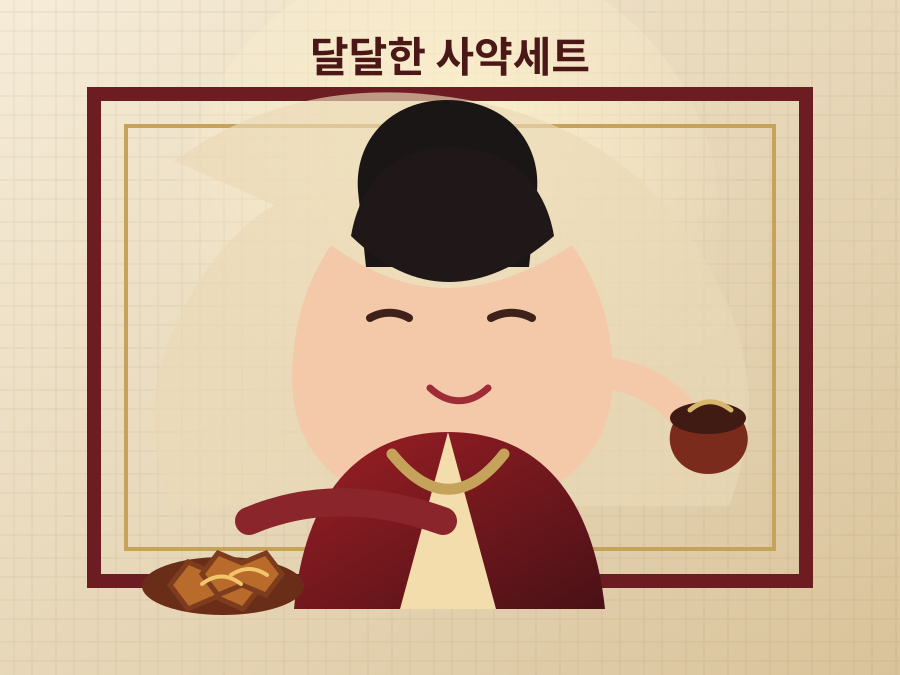
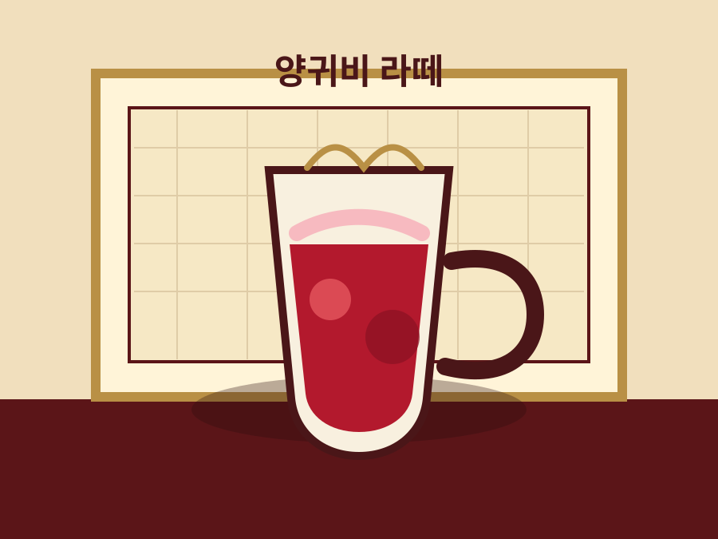
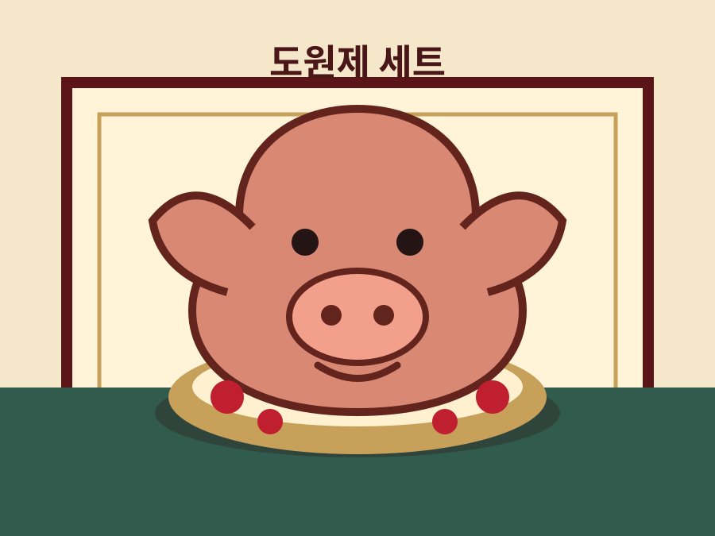
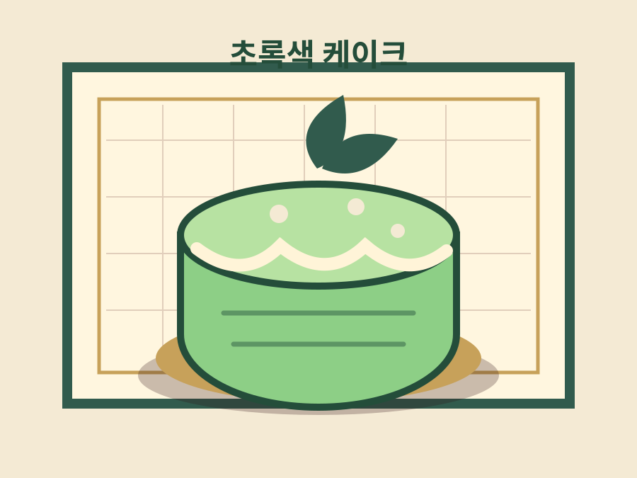

Joseon Tea Salon
비단빛 조명, 한지의 결, 전통차와 약과가 어우러진 조선시대풍 카페입니다.
Menu

진하게 달인 쌍화탕에 바삭하고 달콤한 약과를 곁들인 시그니처 세트

붉은 과일 시럽과 우유를 층층이 담은 무성분 콘셉트 라떼

복을 비는 제례상 콘셉트의 강렬한 포토 메뉴 세트

쑥과 말차 크림으로 초록빛을 낸 무성분 콘셉트 케이크
About
장희빈 카페는 조선 궁중의 다과상에서 영감을 받은 전통 찻집입니다. 붉은 비단, 먹빛 목재, 한지 무늬를 더해 사진을 찍어도 머물러도 분위기가 살아나는 공간을 준비했습니다.
대표 메뉴인 달달한 사약세트는 쌍화탕과 약과를 함께 내어 전통적인 재미와 달콤한 맛을 동시에 즐길 수 있게 구성했습니다.